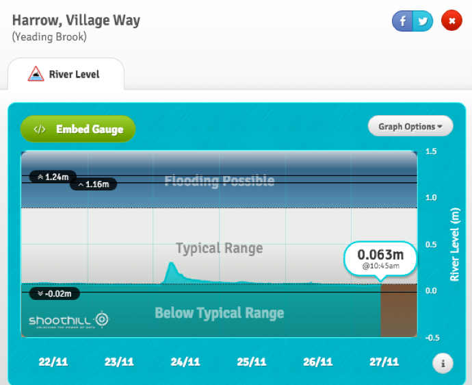
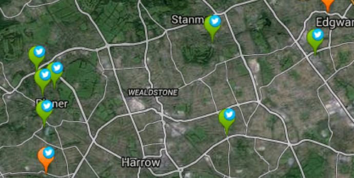

Businesses, communities and government groups have used data made open by EA in many different ways.
Showcasing what is possible with open data
When EA released its data, members of the open data community worked quickly to show what was possible in using it. The Flood Hack, held in conjunction with EA’s first flood open data release, saw 18 applications developed. These included Flood Feeder (a visualised aggregated feed of flood and related data) and DownStreams (a social enterprise linking downstream communities that are at risk of flooding with upstream communities that could prevent it).
Shortly after the release of the Risk of Flooding from Rivers and Sea (RoFRS) dataset, Owen Boswarva, an Environment Agency Data Advisory Group (EADAG) member, created a number of web apps to illustrate the data’s potential.
Building flood risk awareness tools
Most applications that use EA open data outside of the public sector use flood risk data or live flood data feeds. Shoothill used the data to build apps like My Flood Risk and FloodAlerts, that can inform the public of their risk of flooding. FloodAlerts received millions of hits during the severe flooding of 2013/2014 and featured on the websites of UK media outlets, such as Sky News, the BBC and the Daily Mail.
Shoothill has also used river level data to create GaugeMap, an ODI Award-winning product and the world’s first live river level map system. Shoothill has assigned a Twitter account for each gauge that is used to collect the river level data – over 2,400 gauges overall – so that users can be alerted to rising river levels that could lead to flooding.
  Shoothill’s GaugeMap allows users to check river levels using the gauges close to themSoftware consultancy KnowNow has recently combined EA data with other datasets to predict where road accidents caused by flooding would occur. Engineering group CH2M has used the data to release their own Flood Alert app.
ESI International, a specialist geoscience consultancy, has developed environmental models using closed or shared data for about 19 years. It has been quick to use the increasing amounts of open data made available by EA – including river level data linked to ESI International's own mathematical models, to create water flow models for England. The models can be used to produce forecasts and predict flooding.
Solving commercial problems
Business and markets can be greatly affected by environmental change. To avoid disruption and manage future risks, businesses need to plan around environmental factors.
Flood risk data is generally used in two areas of business: for risk selection and pricing in insurance, and in environmental reports for property groups. It is used by UK household insurers and commercial property insurers. Firms like Argyll Environmental and GroundSure use it to produce environmental flood reports for the property industry. Some large insurers supplement EA open data with proprietary commercial models. There is now a new Memorandum of Understanding under which insurers will cede the underwriting of high-risk properties to a government-backed reinsurance scheme, Flood Re. Flood Re will use a proprietary flood risk model, which is being developed by commercial firm JBA, and will use some EA data.
In 2014 the UK’s innovation agency Innovate UK held a competition for companies to ‘solve business problems with environmental data’. Winning companies like ImageCat Ltd used EA flood risk data to help build forecasting tools for infrastructure and insurance sectors. Others, like International Synergies, used EA pollution and waste data to help find low-carbon waste streams as an alternative raw material for major construction projects.
As more of this data is published openly, more businesses can use it in combination with other commercial or societal data to develop valuable new insights.
Campaigning about climate change
As EA flood data is now more accessible to people without specialist technical skills, it is likely to be used more in different industries and across different platforms. Flood risk research based on EA open data by GroundSure was featured in the Evening Standard, paving the way for charities and interest groups to use the data in their own campaigns.